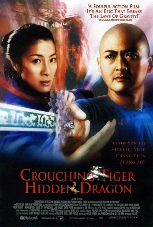

#79 Tiger and Dragon
Alternativ: Crouching Tiger, Hidden Dragon (Englischer Titel)
Auszeichnungen: 4 Oscars gewonnen für 6 Oscars nominiert 2 GoldenGlobes gewonnen 1 BAFTA-Awards gewonnen
 
 IMDB-Wertung: 7.9 / 10
IMDB-Wertung: 7.9 / 10  Metascore: 93
Metascore: 93 
Nachdem der Schwertkämpfer Li Mu Bai beschließt, sein legendäres "Grünes Schwert" dem Hohen Rat zu schenken, gibt es nur noch Ärger: Kaum ist das Schwert angekommen, wird es auch schon wieder von einem mysteriösen maskierten Mädchen geklaut. Schließlich stellt sich heraus, dass der Dieb Jen Yu heißt und Tochter des Gouverneurs ist. Beeindruckt von ihren kämpferischen Fähigkeiten, fasst Mu Bai den Entschluss, Yu als seine Schülerin zu unterweisen und sie zur Kämpferin für Recht und Ordnung zu machen. Doch das Mädchen zeigt wenig Interesse und nutzt seine Fähigkeiten zu sinnlosen Gewaltakten. Zusammen mit seiner heimlichen Flamme Lien findet Mu Bai schließlich heraus, dass Yu Schülerin der bösen Jade Fuchs ist, die einst Mu Bais Meister tötete. Mu Bai und Lien glauben an das Gute in Yu und wollen sie von Jade Fuchs befreien. Es kommt zum entscheidenden Duell...
Jahr: 2000
Dauer: 120 Minuten
FSK: 12
Land: Taiwan Studio: Arthaus FilmverleihTonspuren:
Untertitel:
Auflösung: 1080p (1920×800) Größe: 6379 MB
Genre: Action, Abenteuer, Fantasy, Liebe
Regisseur:  Ang Lee
Ang Lee
Drehbuch: Du Lu Wang, Hui-Ling Wang, James Schamus, Kuo Jung Tsai
Soundtrack: Dun Tan
Darsteller:
 Yun-Fat Chow als Master Li Mu Bai
Yun-Fat Chow als Master Li Mu Bai Michelle Yeoh als Yu Shu Lien
Michelle Yeoh als Yu Shu Lien Ziyi Zhang als Jen Yu, Mandarin version / Jiao Long, English dubbed version
Ziyi Zhang als Jen Yu, Mandarin version / Jiao Long, English dubbed version Chen Chang als Lo 'Dark Cloud' / Luo Xiao Hu
Chen Chang als Lo 'Dark Cloud' / Luo Xiao Hu- Pei-Pei Cheng als Jade Fox
- Sihung Lung als Sir Te
- Fa Zeng Li als Governor Yu
- Xian Gao als Bo
- Yan Hai als Madame Yu
- De Ming Wang als Police Inspector Tsai / Prefect Cai Qiu
- Li Li als May
- Su Ying Huang als Auntie Wu
- Jin Ting Zhang als De Lu
- Rui Yang als Maid
- Kai Li als Gou Jun Pei
- Jian Hua Feng als Gou Jun Sinung
- Zhen Xi Du als Shop Owner
- Cheng Lin Xu als Captain
- Feng Lin als Captain
- Wen Sheng Wang als Gangster A
- Dong Song als Gangster B
- Zhong Xuan Ma als Mi Biao
- Bao Cheng Li als Fung Machete Chang
- Yong De Yang als Monk Jing
- Shao Jun Zhang als Male Performer
- Ning Ma als Female Performer
- Jian Min Zhu als Waiter
- Chang Cheng Dong als Homeless Man
- Yi Shih als Waitress
- Bin Chen als Servant
- Sao Chen Chang als Nightman
Datei: X:\HD-Eastern-Collections\Tiger and Dragon\Tiger and Dragon (2000, FSK12, 1920x800).mkv seit 02.02.2015
Festplatte: HD Eastern+Western
 Es gibt insgesamt 7 Filme in der Gruppe 'HD-Eastern-Collections\Tiger and Dragon'
Es gibt insgesamt 7 Filme in der Gruppe 'HD-Eastern-Collections\Tiger and Dragon'